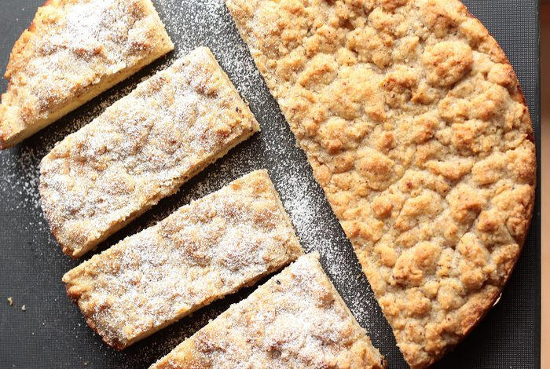
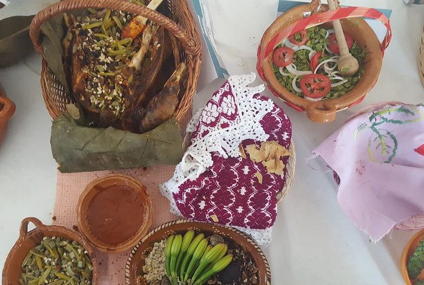
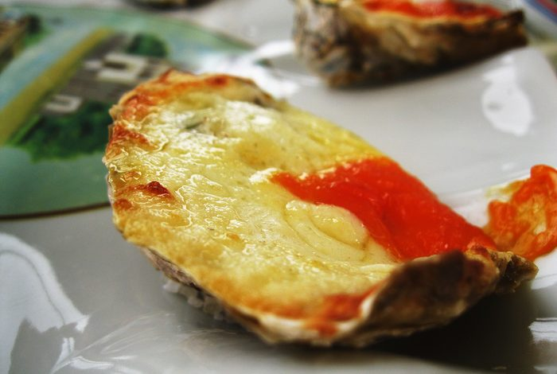
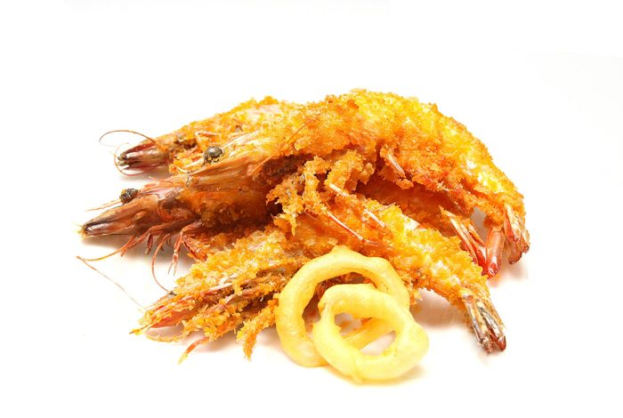
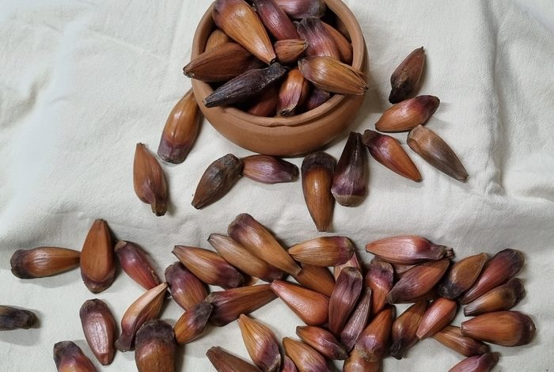
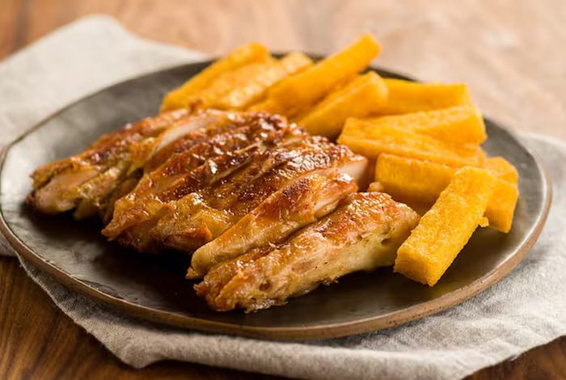

1. Planície costeira
Faixa estreita de 561 km de litoral, com praias, dunas, lagoas, baías e ilhas. É onde vivem quase metade dos catarinenses.
Três formas de entender Santa Catarina em uma só página: como a terra é formada, o que cada região produz com ela e o que acaba, afinal, no prato.
O relevo catarinense funciona como uma escada que sobe do mar e depois desce lentamente para o interior. Essa estrutura explica quase tudo: o clima, a vegetação, a economia e até a colonização de cada região.
Faixa estreita de 561 km de litoral, com praias, dunas, lagoas, baías e ilhas. É onde vivem quase metade dos catarinenses.
Uma parede de rocha que sobe de 0 a 1.400 metros em poucos quilômetros, formando cânions, cachoeiras e as estradas de serra mais famosas do país.
Do alto da serra o terreno desce até o vale do rio Uruguai, na fronteira com o Rio Grande do Sul e a Argentina. Terra de lavoura, aves e suínos.
| Faixa | Altitude | Vegetação original | Uso principal |
|---|---|---|---|
| Litoral | 0 a 30 m | Mata Atlântica, restinga e mangue | Turismo, pesca e portos |
| Planalto Serrano | 800 a 1.827 m | Mata de araucárias e campos de altitude | Pecuária, maçã e vinho |
| Oeste | 300 a 800 m | Floresta Estacional Decidual | Agroindústria e grãos |
Diferente de outros estados, Santa Catarina não concentra a riqueza na capital: cada região desenvolveu sua própria vocação industrial.
Joinville e Jaraguá do Sul lideram os setores metalmecânico, de motores elétricos e de plásticos, com forte presença de escolas técnicas.
Blumenau e Brusque formam um dos maiores polos têxteis e de cama, mesa e banho do Brasil, herança direta das indústrias fundadas por imigrantes alemães.
Chapecó e Concórdia sustentam a criação de aves e suínos em sistema de cooperativas, o que faz do estado o maior exportador de carne de porco do país.
daqui saem os frangos que o mundo come
Florianópolis virou referência em software e startups, enquanto o litoral e a serra movimentam o turismo em duas temporadas complementares: verão na praia, inverno na montanha.
Criciúma nasceu do carvão e hoje é polo nacional de revestimentos cerâmicos, com forte presença de descendentes de italianos e poloneses.
São Joaquim e Fraiburgo respondem por boa parte da maçã brasileira, e o frio de altitude permitiu o surgimento de vinhos finos reconhecidos internacionalmente.
| Indicador | Situação de Santa Catarina |
|---|---|
| PIB estadual | Entre as seis maiores economias do Brasil |
| IDH | 0,833 (2024) — o terceiro mais alto do país, atrás do Distrito Federal e de São Paulo |
| Expectativa de vida | 78,3 anos (IBGE, 2024), a maior entre os estados — só o Distrito Federal fica acima |
| Principais exportações | Carnes de frango e suíno, madeira, motores e cerâmica |
| Taxa de urbanização | 88,4% da população em áreas urbanas (Censo 2022) |
Cada prato típico conta de onde veio o povo daquela região: o mar dos açorianos, a cozinha alemã do vale e a italiana do sul e do oeste.

Herança alemã
Bolo de massa fofa coberto por farofa doce, recheado com banana, uva ou goiabada. Acompanha o café colonial em qualquer cidade do Vale do Itajaí.

Herança alemã
Prato símbolo de Brusque e Blumenau: marreco assado com recheio de miúdos e pão, servido com repolho roxo e purê de maçã. Ganhou festa própria em Brusque, a Fenarreco.

Herança açoriana
Servidas cruas com limão, gratinadas ou empanadas. Vêm dos cultivos das baías de Florianópolis, ao lado de mexilhões, camarões e da tainha do inverno.

Herança açoriana
Tradição de Bombinhas e Penha: o camarão chega à mesa em várias preparações seguidas — frito, ensopado, com pirão e em bolinho.

Tradição serrana
Na serra, o pinhão aparece cozido, na paçoca ou no entrevero — uma mistura de carnes, linguiça e legumes feita na panela de ferro, herança dos tropeiros.

Herança italiana
No sul e no oeste, a cozinha italiana serve polenta frita, galeto no espeto, queijos, salames e vinho colonial produzido em casa.